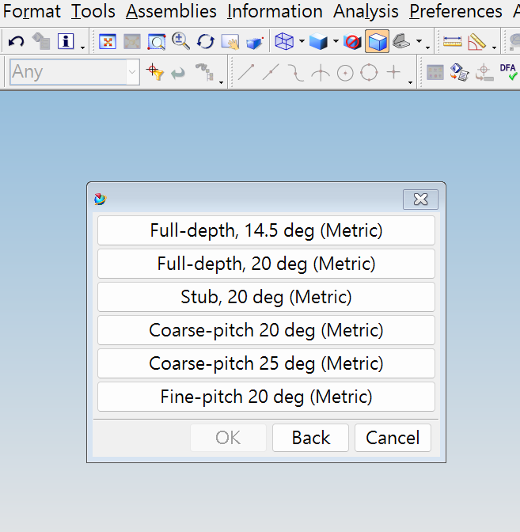
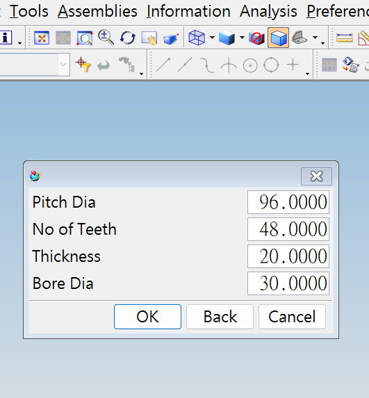
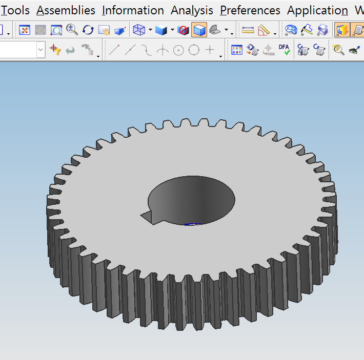
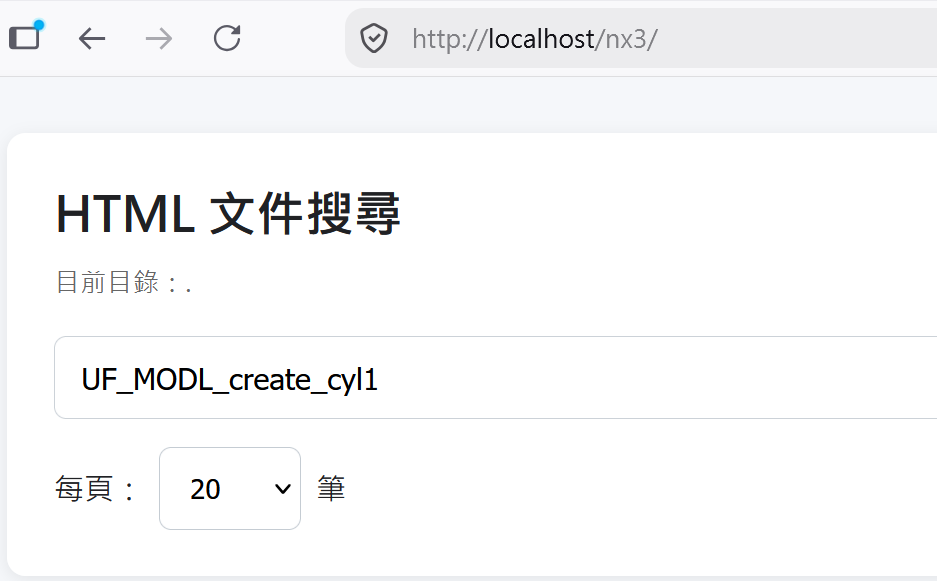
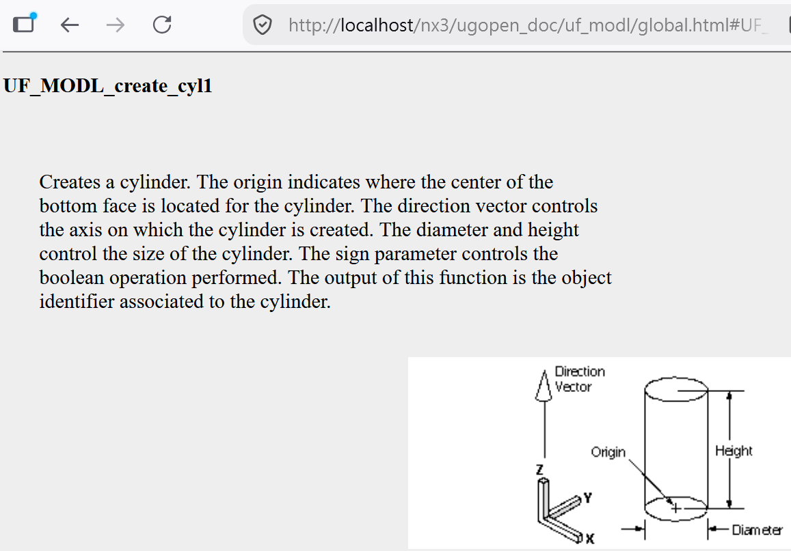

NX3 <<
Previous Next >> NX3_hints
ugopen



以下的 ugopen 程式只能用於 2004 年推出的 UGS NX3，採 Visual Studio Community 2026 開發，使用 compile_gear.bat 編譯。
2004 年的 NX3 文件搜尋功能採用 Java 技術完成，在此改為 Javascript:

以下取得 UF_MODL_create_cyl1 建立圓柱體的對應函式說明:

gear_mm_w_comment.c 解析
header files:
/******************************************************************************
* *
* PROGRAM DESCRIPTION - *
* The following example requires a blank, open part. The code creates a *
* spur gear *
* gear.c *
* *
* 繪圖尺寸：mm（公制 Module 系統） *
* *
* 【程式功能】 *
* 使用 UG/Open API (UF) 在空白零件中建立公制漸開線正齒輪。 *
* 包含：毛胚圓柱、單一齒槽剖面（含根部圓角）、Circular Pattern 複製所有齒、 *
* 自動計算模數與各項幾何參數。 *
* *
* 【使用方法】 *
* 1. 開啟空白公制零件（單位 mm）。 *
* 2. 編譯並載入本程式（或使用 ugopen 執行）。 *
* 3. 執行後會跳出選單選擇齒形標準，再輸入節圓直徑、齒數、齒寬。 *
* *
******************************************************************************/
#include <stdio.h> /* 標準輸入輸出 */
#include <string.h> /* 字串處理函式 */
#include <math.h> /* 數學函式 (sin, cos, sqrt...) */
#include <uf.h> /* UG/Open 核心定義 */
#include <uf_defs.h> /* UG/Open 常數與型別 */
#include <uf_curve.h> /* 曲線建立 (線、弧、fillet、spline) */
#include <uf_modl.h> /* 實體建模 (圓柱、擠出、pattern) */
#include <uf_disp.h> /* 顯示相關 */
#include <uf_ui.h> /* 使用者介面 (選單、輸入) */
#include <uf_csys.h> /* 座標系統 */
#include <uf_obj.h> /* 物件操作 (blank、delete) */
#include <uf_mtx.h> /* 矩陣運算 */
#include <uf_trns.h> /* 轉換 */
#include <uf_view.h> /* 視圖操作 (Fit) */
/* ========== 常數定義 ========== */
#define POLES 6 /* Bezier 控制點數量（6 點） */
#define WEIGHT 1.0 /* 權重（目前未使用） */
#define ORDER 6 /* 樣條階數 */
/* 錯誤檢查巨集：呼叫 UF 函式後若失敗則印出錯誤訊息 */
#define UF_CALL(X) (report(__FILE__, __LINE__, #X, (X)))
report 函式:
/* --------------------------------------------------------------------------
* 函式：report
* 功能：檢查 UF 函式回傳值，若有錯誤則印出檔名、行號與錯誤訊息
* 參數：
* file - 來源檔案名稱
* line - 行號
* call - 被呼叫的函式名稱字串
* irc - 回傳碼 (0 = 成功)
* 回傳：原本的 irc
* -------------------------------------------------------------------------- */
static int report(char *file, int line, char *call, int irc)
{
if (irc) /* 若有錯誤 */
{
char messg[133];
printf("%s, line %d: %s\n", file, line, call);
/* 取得錯誤訊息字串，若失敗則只印錯誤碼 */
(UF_get_fail_message(irc, messg)) ?
printf(" returned a %d\n", irc) :
printf(" returned error %d: %s\n", irc, messg);
}
return (irc);
}
prompt_for_three_numbers 函式:
/* --------------------------------------------------------------------------
* 函式：prompt_for_three_numbers
* 功能：彈出對話框讓使用者輸入三個數值（節圓直徑、齒數、齒寬）
* 參數：
* prompt - 對話框標題
* item1/item2/item3 - 三個輸入欄位標籤
* number1/2/3 - 輸入/輸出數值指標（有預設值）
* 回傳：TRUE = 使用者按了 OK，FALSE = 取消
* -------------------------------------------------------------------------- */
static logical prompt_for_three_numbers(char *prompt, char *item1, char *item2, char *item3,
double *number1, double *number2, double *number3)
{
int irc, resp;
char menu[3][16]; /* 三個欄位標籤 */
double da[3]; /* 暫存輸入值 */
memset(menu, 0, sizeof(menu)); /* 清零 */
strncpy(menu[0], item1, 15); menu[0][15] = '\0'; /* 複製標籤並確保結尾 null */
strncpy(menu[1], item2, 15); menu[1][15] = '\0';
strncpy(menu[2], item3, 15); menu[2][15] = '\0';
da[0] = *number1; /* 帶入預設值 */
da[1] = *number2;
da[2] = *number3;
/* uc1609：顯示三個數值輸入對話框 */
resp = uc1609(prompt, menu, 3, da, &irc);
if (resp == 3 || resp == 4) /* 3 或 4 表示使用者按了確定 */
{
*number1 = da[0];
*number2 = da[1];
*number3 = da[2];
return TRUE;
}
else
return FALSE; /* 使用者取消 */
}
主功能函式:
/* --------------------------------------------------------------------------
* 主功能函式：do_ugopen_api
* 功能：實際建立齒輪的所有邏輯
* -------------------------------------------------------------------------- */
static void do_ugopen_api(void)
{
/* ========== 區域變數宣告 ========== */
int i, j, k_fixup, p_fixup; /* 迴圈與樣條狀態 */
int trim_opts[3] = {0, 0, 0}; /* Fillet 修剪選項 */
int arc_opts[3] = {0, 0, 0}; /* Fillet 弧選項 */
int create_flag = 1, style1, method, method1 = 0;
int resp, int_teeth_no, num_instances;
/* 曲線與特徵的 tag（初始化為 NULL_TAG 避免未定義行為） */
tag_t lh_spline = NULL_TAG, rh_spline = NULL_TAG; /* 左/右漸開線樣條 */
tag_t lh_base_spline = NULL_TAG, rh_base_spline = NULL_TAG; /* 根圓到基圓的徑向線（method 0 使用） */
tag_t temp_tag = NULL_TAG, od_arc_tag = NULL_TAG; /* 暫存、齒頂弧 */
tag_t curve_obj[3] = {NULL_TAG, NULL_TAG, NULL_TAG}; /* CreateFillet 用的曲線陣列 */
tag_t lh_fillet = NULL_TAG, rh_fillet = NULL_TAG; /* 左/右根部圓角 */
tag_t root_arc_tag = NULL_TAG, cyl_tag = NULL_TAG; /* 齒根弧、毛胚圓柱 */
tag_t instances = NULL_TAG, tooth_gap_tag = NULL_TAG; /* Pattern 實例、單一齒槽特徵 */
tag_t teeth_grp_tag = NULL_TAG; /* 齒特徵群組 */
tag_t teeth_tag[240]; /* 儲存所有齒特徵 tag（最多 240 齒） */
/* Bezier 樣條的節點向量（6 點、階數 6 的標準設定） */
double knotseq[12] = {0.0,0.0,0.0,0.0,0.0,0.0,1.0,1.0,1.0,1.0,1.0,1.0};
double pole_array[POLES * 4]; /* 控制點陣列 (x,y,z,weight) */
/* 漸開線控制點 */
double poles[6][3], poles1[6][3], poles2[6][3]; /* 原始、旋轉後左、旋轉後右 */
/* 幾何計算用變數 */
double base_rad, root_rad, rad2, theta1, theta2, theta3, delta_theta;
double theta_p, rot_angle, angle1;
double t_mat[6][6], l_mat[6][6], u_mat[6][6], b_mat[6][2], y_mat[6][2]; /* LU 分解矩陣 */
double point1[3], point2[3], point3[3], tangent1[3];
/* ===== 公制預設值 (mm) ===== */
double pitch_dia = 96.0; /* 節圓直徑 mm（module 2 × 48 teeth） */
double pressure_angle = 20.0; /* 壓力角（之後會依 style 覆蓋） */
double module; /* 公制模數 m = d / z */
double addendum, pitch_rad; /* 齒頂高、節圓半徑 */
double deddendum, sub1, sub2, sub2sq, sub1sq, x_pitch;
double teeth_no = 48.0; /* 齒數 */
double clearance; /* 齒根間隙 */
double vec_x[3] = {1.0, 0.0, 0.0}, zc_dir[3] = {0.0, 0.0, 1.0}; /* X 軸、Z 軸方向 */
double start_angle, end_angle, junk3[3];
double max_fillet, length1; /* 最大圓角半徑、徑向線長度 */
double origin[3] = {0.0, 0.0, 0.0}; /* 原點 */
double tooth_length = 20.0; /* 齒寬 mm */
double gear_od; /* 齒頂圓直徑 */
/* 齒形標準選項文字 */
char options[6][38] = {
"Full-depth, 14.5 deg (Metric)",
"Full-depth, 20 deg (Metric)",
"Stub, 20 deg (Metric)",
"Coarse-pitch 20 deg (Metric)",
"Coarse-pitch 25 deg (Metric)",
"Fine-pitch 20 deg (Metric)"
};
/* 字串緩衝區（用於表達式） */
char tooth_length_st[64], gear_od_st[64], teeth_no_st[32], angle_st[32];
char *taper_angle = "0.0"; /* 擠出錐度（0 = 直壁） */
/* 可寫入緩衝區，避免把字串常數寫入造成 access violation */
char limit0_buf[64];
char limit1_buf[64];
char *limit1[2]; /* 擠出起迄限制 */
UF_CURVE_line_t ln1; /* 建立直線用結構 */
uf_list_p_t loop_list = NULL; /* 曲線/特徵列表 */
uf_list_p_t features = NULL;
uf_list_p_t instances_feature_list = NULL;
/* 初始化陣列為 0，避免未定義行為 */
memset(teeth_tag, 0, sizeof(teeth_tag));
memset(poles, 0, sizeof(poles));
memset(poles1, 0, sizeof(poles1));
memset(poles2, 0, sizeof(poles2));
memset(pole_array, 0, sizeof(pole_array));
memset(t_mat, 0, sizeof(t_mat));
memset(l_mat, 0, sizeof(l_mat));
memset(u_mat, 0, sizeof(u_mat));
memset(b_mat, 0, sizeof(b_mat));
memset(y_mat, 0, sizeof(y_mat));
/* ================================================================
* 建立固定的 6 點 Bezier 轉換矩陣
* 用途：把漸開線上的 6 個點轉換成 Bezier 控制點（透過 LU 分解求解）
* 此矩陣為預先計算好的常數，用來把參數點轉成控制點
* ================================================================ */
for (i = 0; i < 6; i++)
{
for (j = 0; j < 6; j++)
{
t_mat[i][j] = 0.0;
l_mat[i][j] = 0.0;
u_mat[i][j] = 0.0;
}
}
/* 填入 t_mat 的非零元素（對稱） */
t_mat[0][0] = 1.0;
t_mat[5][5] = 1.0;
t_mat[1][0] = 0.32768; t_mat[4][5] = t_mat[1][0];
t_mat[1][1] = 0.4096; t_mat[4][4] = t_mat[1][1];
t_mat[1][2] = 0.2048; t_mat[4][3] = t_mat[1][2];
t_mat[1][3] = 0.0512; t_mat[4][2] = t_mat[1][3];
t_mat[1][4] = 0.0064; t_mat[4][1] = t_mat[1][4];
t_mat[1][5] = 0.00032; t_mat[4][0] = t_mat[1][5];
t_mat[2][0] = 0.07776; t_mat[3][5] = t_mat[2][0];
t_mat[2][1] = 0.2592; t_mat[3][4] = t_mat[2][1];
t_mat[2][2] = 0.3456; t_mat[3][3] = t_mat[2][2];
t_mat[2][3] = 0.2304; t_mat[3][2] = t_mat[2][3];
t_mat[2][4] = 0.0768; t_mat[3][1] = t_mat[2][4];
t_mat[2][5] = 0.01024; t_mat[3][0] = t_mat[2][5];
/* 單位矩陣作為 L 的對角線 */
for (i = 0; i < 6; i++)
l_mat[i][i] = 1.0;
u_mat[0][0] = 1.0;
u_mat[5][5] = 1.0;
/* LU 分解（把 t_mat 分解成 L × U） */
for (i = 1; i < 6; i++)
{
l_mat[i][0] = t_mat[i][0];
u_mat[1][i] = t_mat[1][i];
}
l_mat[2][1] = t_mat[2][1] / t_mat[1][1];
l_mat[3][1] = t_mat[3][1] / t_mat[1][1];
l_mat[4][1] = t_mat[4][1] / t_mat[1][1];
u_mat[2][2] = t_mat[2][2] - l_mat[2][1] * u_mat[1][2];
u_mat[2][3] = t_mat[2][3] - l_mat[2][1] * u_mat[1][3];
u_mat[2][4] = t_mat[2][4] - l_mat[2][1] * u_mat[1][4];
u_mat[2][5] = t_mat[2][5] - l_mat[2][1] * u_mat[1][5];
l_mat[3][2] = (t_mat[3][2] - l_mat[3][1] * u_mat[1][2]) / u_mat[2][2];
l_mat[4][2] = (t_mat[4][2] - l_mat[4][1] * u_mat[1][2]) / u_mat[2][2];
u_mat[3][3] = t_mat[3][3] - l_mat[3][1] * u_mat[1][3] - l_mat[3][2] * u_mat[2][3];
u_mat[3][4] = t_mat[3][4] - l_mat[3][1] * u_mat[1][4] - l_mat[3][2] * u_mat[2][4];
u_mat[3][5] = t_mat[3][5] - l_mat[3][1] * u_mat[1][5] - l_mat[3][2] * u_mat[2][5];
l_mat[4][3] = (t_mat[4][3] - l_mat[4][1] * u_mat[1][3] - l_mat[4][2] * u_mat[2][3]) / u_mat[3][3];
u_mat[4][4] = t_mat[4][4] - l_mat[4][1] * u_mat[1][4] - l_mat[4][2] * u_mat[2][4] - l_mat[4][3] * u_mat[3][4];
u_mat[4][5] = t_mat[4][5] - l_mat[4][1] * u_mat[1][5] - l_mat[4][2] * u_mat[2][5] - l_mat[4][3] * u_mat[3][5];
restart: ; /* 重新開始標籤（目前未真正使用迴圈，保留原結構） */
/* ================================================================
* 使用者介面：選擇齒形標準
* uc1603 顯示選項清單，回傳值 5~10 對應選項 1~6
* ================================================================ */
resp = uc1603("Standard Metric Involute Gear Systems (mm)", 0, options, 6);
if (resp == 2) /* 使用者按取消 */
goto ending1;
/* 輸入節圓直徑、齒數、齒寬 */
prompt_for_three_numbers("Gear Data (mm)", "Pitch Dia (mm)", "No of Teeth", "Thickness (mm)",
&pitch_dia, &teeth_no, &tooth_length);
style1 = resp - 4; /* 轉換成 1~6 */
pitch_rad = pitch_dia / 2.0; /* 節圓半徑 */
/* ===== 公制 Module 計算 ===== */
module = pitch_dia / teeth_no; /* m = d / z */
/* 依選擇的 style 設定壓力角、齒頂高、齒根高、最大圓角 */
switch (style1)
{
case 1: /* Full-depth, 14.5 deg */
pressure_angle = 14.5;
base_rad = pitch_rad * cos(pressure_angle * DEGRA);
addendum = 1.00 * module;
deddendum = 1.25 * module;
clearance = 0.25 * module;
max_fillet = 0.38 * module;
break;
case 2: /* Full-depth, 20 deg（最常用） */
pressure_angle = 20.0;
base_rad = pitch_rad * cos(pressure_angle * DEGRA);
addendum = 1.00 * module;
deddendum = 1.25 * module;
clearance = 0.25 * module;
max_fillet = 0.38 * module;
break;
case 3: /* Stub, 20 deg */
pressure_angle = 20.0;
base_rad = pitch_rad * cos(pressure_angle * DEGRA);
addendum = 0.80 * module;
deddendum = 1.00 * module;
clearance = 0.20 * module;
max_fillet = 0.30 * module;
break;
case 4: /* Coarse-pitch 20 deg */
pressure_angle = 20.0;
base_rad = pitch_rad * cos(pressure_angle * DEGRA);
addendum = 1.00 * module;
deddendum = 1.25 * module;
clearance = 0.25 * module;
max_fillet = 0.30 * module;
break;
case 5: /* Coarse-pitch 25 deg */
pressure_angle = 25.0;
base_rad = pitch_rad * cos(pressure_angle * DEGRA);
addendum = 1.00 * module;
deddendum = 1.25 * module;
clearance = 0.25 * module;
max_fillet = 0.30 * module;
break;
case 6: /* Fine-pitch 20 deg */
pressure_angle = 20.0;
base_rad = pitch_rad * cos(pressure_angle * DEGRA);
addendum = 1.00 * module;
deddendum = 1.25 * module + 0.05; /* 額外 0.05 mm 最小清除 */
clearance = 0.25 * module + 0.05;
max_fillet = 0.30 * module;
break;
default:
goto ending1;
}
/* 計算根圓半徑與齒頂圓直徑 */
root_rad = pitch_rad - deddendum;
gear_od = (pitch_rad + addendum) * 2.0;
/* 齒頂對應的展開參數 theta2 */
sub1 = (pitch_rad + addendum) / base_rad;
theta2 = sqrt(sub1 * sub1 - 1.0);
/* 準備圓柱建立用的字串表達式 */
sprintf(gear_od_st, "%f", gear_od);
sprintf(tooth_length_st, "TOOTH_LENGTH1=%f", tooth_length);
/* 建立毛胚圓柱（直徑 = 齒頂圓、高度 = 齒寬） */
UF_MODL_create_cyl1(UF_NULLSIGN, origin, tooth_length_st, gear_od_st,
zc_dir, &cyl_tag);
/* 擠出限制字串（起點 0、終點為齒寬表達式） */
strcpy(limit0_buf, "0.0");
strcpy(limit1_buf, "TOOTH_LENGTH1");
limit1[0] = limit0_buf;
limit1[1] = limit1_buf;
/* 判斷使用哪種方法建立齒根
* method 0：root_rad < base_rad → 需要額外徑向線連到基圓
* method 1：root_rad >= base_rad → 漸開線直接從根圓開始
*/
if (root_rad < base_rad)
method = 0;
else
method = 1;
switch (method)
{
/* ================================================================
* case 0：root_rad < base_rad
* 漸開線從基圓開始，需額外建立從根圓到基圓的徑向線，再做 fillet
* ================================================================ */
case 0:
/* 從 t=0（基圓）到 t=theta2（齒頂）取 6 點 */
theta1 = 0.0;
theta3 = 0.0;
delta_theta = (theta2 - theta1) / 5.0;
for (i = 0; i < 6; i++)
{
/* 漸開線參數方程 */
b_mat[i][0] = base_rad * sin(theta3) - base_rad * theta3 * cos(theta3);
b_mat[i][1] = base_rad * cos(theta3) + base_rad * theta3 * sin(theta3);
theta3 += delta_theta;
}
/* ----- Forward substitution（解 Ly = b） ----- */
y_mat[0][0] = b_mat[0][0] / l_mat[0][0];
y_mat[0][1] = b_mat[0][1] / l_mat[0][0];
y_mat[1][0] = (b_mat[1][0] - l_mat[1][0] * y_mat[0][0]) / l_mat[1][1];
y_mat[1][1] = (b_mat[1][1] - l_mat[1][0] * y_mat[0][1]) / l_mat[1][1];
y_mat[2][0] = (b_mat[2][0] - l_mat[2][0] * y_mat[0][0] - l_mat[2][1] * y_mat[1][0]) / l_mat[2][2];
y_mat[2][1] = (b_mat[2][1] - l_mat[2][0] * y_mat[0][1] - l_mat[2][1] * y_mat[1][1]) / l_mat[2][2];
y_mat[3][0] = (b_mat[3][0] - l_mat[3][0] * y_mat[0][0] - l_mat[3][1] * y_mat[1][0] - l_mat[3][2] * y_mat[2][0]) / l_mat[3][3];
y_mat[3][1] = (b_mat[3][1] - l_mat[3][0] * y_mat[0][1] - l_mat[3][1] * y_mat[1][1] - l_mat[3][2] * y_mat[2][1]) / l_mat[3][3];
y_mat[4][0] = (b_mat[4][0] - l_mat[4][0] * y_mat[0][0] - l_mat[4][1] * y_mat[1][0] - l_mat[4][2] * y_mat[2][0]
- l_mat[4][3] * y_mat[3][0]) / l_mat[4][4];
y_mat[4][1] = (b_mat[4][1] - l_mat[4][0] * y_mat[0][1] - l_mat[4][1] * y_mat[1][1] - l_mat[4][2] * y_mat[2][1]
- l_mat[4][3] * y_mat[3][1]) / l_mat[4][4];
y_mat[5][0] = (b_mat[5][0] - l_mat[5][0] * y_mat[0][0] - l_mat[5][1] * y_mat[1][0] - l_mat[5][2] * y_mat[2][0]
- l_mat[5][3] * y_mat[3][0] - l_mat[5][4] * y_mat[4][0]) / l_mat[5][5];
/* 修正：補上原本遺漏的 * y_mat[4][1] */
y_mat[5][1] = (b_mat[5][1] - l_mat[5][0] * y_mat[0][1] - l_mat[5][1] * y_mat[1][1] - l_mat[5][2] * y_mat[2][1]
- l_mat[5][3] * y_mat[3][1] - l_mat[5][4] * y_mat[4][1]) / l_mat[5][5];
/* ----- Back substitution（解 Ux = y）得到控制點 poles ----- */
poles[5][0] = y_mat[5][0];
poles[5][1] = y_mat[5][1];
poles[4][0] = (y_mat[4][0] - u_mat[4][5] * poles[5][0]) / u_mat[4][4];
poles[4][1] = (y_mat[4][1] - u_mat[4][5] * poles[5][1]) / u_mat[4][4];
poles[3][0] = (y_mat[3][0] - u_mat[3][4] * poles[4][0] - u_mat[3][5] * poles[5][0]) / u_mat[3][3];
poles[3][1] = (y_mat[3][1] - u_mat[3][4] * poles[4][1] - u_mat[3][5] * poles[5][1]) / u_mat[3][3];
poles[2][0] = (y_mat[2][0] - u_mat[2][3] * poles[3][0] - u_mat[2][4] * poles[4][0] - u_mat[2][5] * poles[5][0]) / u_mat[2][2];
poles[2][1] = (y_mat[2][1] - u_mat[2][3] * poles[3][1] - u_mat[2][4] * poles[4][1] - u_mat[2][5] * poles[5][1]) / u_mat[2][2];
poles[1][0] = (y_mat[1][0] - u_mat[1][2] * poles[2][0] - u_mat[1][3] * poles[3][0] - u_mat[1][4] * poles[4][0]
- u_mat[1][5] * poles[5][0]) / u_mat[1][1];
poles[1][1] = (y_mat[1][1] - u_mat[1][2] * poles[2][1] - u_mat[1][3] * poles[3][1] - u_mat[1][4] * poles[4][1]
- u_mat[1][5] * poles[5][1]) / u_mat[1][1];
poles[0][0] = y_mat[0][0] - u_mat[0][1] * poles[1][0] - u_mat[0][2] * poles[2][0] - u_mat[0][3] * poles[3][0]
- u_mat[0][4] * poles[4][0] - u_mat[0][5] * poles[5][0];
poles[0][1] = y_mat[0][1] - u_mat[0][1] * poles[1][1] - u_mat[0][2] * poles[2][1] - u_mat[0][3] * poles[3][1]
- u_mat[0][4] * poles[4][1] - u_mat[0][5] * poles[5][1];
/* 強制基圓起點的 X 為 0（對稱） */
poles[1][0] = 0.0;
poles[0][0] = 0.0;
/* 計算旋轉角度，使齒槽中心對準 +Y */
rad2 = pitch_dia / 2.0;
sub1 = rad2 / base_rad;
sub1sq = sub1 * sub1;
theta_p = sqrt(sub1sq - 1.0);
x_pitch = base_rad * sin(theta_p) - base_rad * theta_p * cos(theta_p);
rot_angle = PI / (2.0 * teeth_no) - asin(x_pitch / rad2);
/* 旋轉得到左側控制點 poles1，右側為鏡射 poles2 */
for (i = 0; i < 6; i++)
{
poles1[i][0] = poles[i][0] * cos(-rot_angle) - poles[i][1] * sin(-rot_angle);
poles1[i][1] = poles[i][0] * sin(-rot_angle) + poles[i][1] * cos(-rot_angle);
poles1[i][2] = 0.0;
}
for (i = 0; i < 6; i++)
{
poles2[i][0] = -poles1[i][0];
poles2[i][1] = poles1[i][1];
poles2[i][2] = 0.0;
}
/* 建立左側樣條 */
for (i = 0; i < 6; i++)
{
pole_array[i * 4 + 0] = poles1[i][0];
pole_array[i * 4 + 1] = poles1[i][1];
pole_array[i * 4 + 2] = 0.0;
pole_array[i * 4 + 3] = 1.0; /* 權重 */
}
UF_CALL(UF_MODL_create_spline(POLES, ORDER, knotseq, pole_array,
&lh_spline, &k_fixup, &p_fixup));
/* 建立右側樣條 */
for (i = 0; i < 6; i++)
{
pole_array[i * 4 + 0] = poles2[i][0];
pole_array[i * 4 + 1] = poles2[i][1];
pole_array[i * 4 + 2] = 0.0;
pole_array[i * 4 + 3] = 1.0;
}
UF_CALL(UF_MODL_create_spline(POLES, ORDER, knotseq, pole_array,
&rh_spline, &k_fixup, &p_fixup));
/* 齒頂弧（三點：左頂點、頂點中點、右頂點） */
point1[0] = 0.0;
point1[1] = pitch_dia / 2.0 + addendum;
point1[2] = 0.0;
UF_CURVE_create_arc_thru_3pts(create_flag, &poles1[5][0], point1, &poles2[5][0], &od_arc_tag);
/* 左側：從根圓到漸開線起點的徑向線 */
UF_MODL_ask_curve_props(lh_spline, 0.0, point1, tangent1, junk3, junk3, junk3, junk3);
UF_VEC3_angle_between(vec_x, &poles1[0][0], zc_dir, &start_angle);
point2[0] = root_rad * cos(start_angle);
point2[1] = root_rad * sin(start_angle);
point2[2] = 0.0;
ln1.start_point[0] = point2[0];
ln1.start_point[1] = point2[1];
ln1.start_point[2] = 0.0;
ln1.end_point[0] = point1[0];
ln1.end_point[1] = point1[1];
ln1.end_point[2] = 0.0;
UF_CALL(UF_CURVE_create_line(&ln1, &lh_base_spline));
/* 右側徑向線 */
UF_MODL_ask_curve_props(rh_spline, 0.0, point1, tangent1, junk3, junk3, junk3, junk3);
UF_VEC3_angle_between(vec_x, &poles2[0][0], zc_dir, &end_angle);
point3[0] = root_rad * cos(end_angle);
point3[1] = root_rad * sin(end_angle);
point3[2] = 0.0;
ln1.start_point[0] = point3[0];
ln1.start_point[1] = point3[1];
ln1.start_point[2] = 0.0;
ln1.end_point[0] = point1[0];
ln1.end_point[1] = point1[1];
ln1.end_point[2] = 0.0;
UF_CALL(UF_CURVE_create_line(&ln1, &rh_base_spline));
/* 計算徑向線長度，決定 fillet 做法 */
UF_VEC3_distance(point3, point1, &length1);
/* 齒根弧（三點：左根點、根圓中點、右根點） */
point1[0] = 0.0;
point1[1] = root_rad;
point1[2] = 0.0;
UF_CURVE_create_arc_thru_3pts(create_flag, point2, point1, point3, &root_arc_tag);
if (length1 > max_fillet)
{
/* 徑向線夠長 → 在根弧與徑向線之間做 fillet */
curve_obj[0] = root_arc_tag;
curve_obj[1] = lh_base_spline;
point1[0] = poles1[0][0] - max_fillet;
point1[1] = poles1[0][1] - max_fillet;
point1[2] = 0.0;
trim_opts[0] = TRUE;
trim_opts[1] = TRUE;
arc_opts[0] = UF_CURVE_TANGENT_OUTSIDE;
arc_opts[1] = 0;
UF_CURVE_create_fillet(UF_CURVE_2_CURVE, curve_obj, point1,
max_fillet, trim_opts, arc_opts, &lh_fillet);
curve_obj[0] = rh_base_spline;
curve_obj[1] = root_arc_tag;
point1[0] = poles2[0][0] + max_fillet;
point1[1] = poles2[0][1] - max_fillet;
point1[2] = 0.0;
trim_opts[0] = TRUE;
trim_opts[1] = TRUE;
arc_opts[1] = UF_CURVE_TANGENT_OUTSIDE;
UF_CURVE_create_fillet(UF_CURVE_2_CURVE, curve_obj, point1,
max_fillet, trim_opts, arc_opts, &rh_fillet);
/* 組成封閉迴圈並擠出減去 */
UF_CALL(UF_MODL_create_list(&loop_list));
UF_CALL(UF_MODL_put_list_item(loop_list, od_arc_tag));
UF_CALL(UF_MODL_put_list_item(loop_list, lh_spline));
UF_CALL(UF_MODL_put_list_item(loop_list, lh_base_spline));
UF_CALL(UF_MODL_put_list_item(loop_list, lh_fillet));
UF_CALL(UF_MODL_put_list_item(loop_list, root_arc_tag));
UF_CALL(UF_MODL_put_list_item(loop_list, rh_fillet));
UF_CALL(UF_MODL_put_list_item(loop_list, rh_base_spline));
UF_CALL(UF_MODL_put_list_item(loop_list, rh_spline));
UF_MODL_create_extruded1(loop_list, taper_angle, limit1,
origin, zc_dir, UF_NEGATIVE, cyl_tag, &features);
UF_CALL(UF_MODL_ask_list_item(features, 0, &tooth_gap_tag));
UF_MODL_delete_list(&loop_list);
UF_MODL_delete_list(&features);
/* 準備 Pattern 用的列表，並隱藏建構曲線 */
UF_CALL(UF_MODL_create_list(&loop_list));
UF_CALL(UF_MODL_put_list_item(loop_list, tooth_gap_tag));
UF_OBJ_set_blank_status(od_arc_tag, UF_OBJ_BLANKED);
UF_OBJ_set_blank_status(lh_spline, UF_OBJ_BLANKED);
UF_OBJ_set_blank_status(lh_base_spline, UF_OBJ_BLANKED);
UF_OBJ_set_blank_status(lh_fillet, UF_OBJ_BLANKED);
UF_OBJ_set_blank_status(root_arc_tag, UF_OBJ_BLANKED);
UF_OBJ_set_blank_status(rh_fillet, UF_OBJ_BLANKED);
UF_OBJ_set_blank_status(rh_base_spline, UF_OBJ_BLANKED);
UF_OBJ_set_blank_status(rh_spline, UF_OBJ_BLANKED);
}
else /* length1 <= max_fillet：徑向線太短，直接在樣條與根弧做 fillet */
{
curve_obj[0] = root_arc_tag;
curve_obj[1] = lh_spline;
point1[0] = poles1[0][0] - max_fillet;
point1[1] = poles1[0][1] + max_fillet;
point1[2] = 0.0;
trim_opts[0] = TRUE;
trim_opts[1] = TRUE;
arc_opts[0] = UF_CURVE_TANGENT_OUTSIDE;
arc_opts[1] = 0;
UF_CURVE_create_fillet(UF_CURVE_2_CURVE, curve_obj, point1,
max_fillet, trim_opts, arc_opts, &lh_fillet);
curve_obj[0] = rh_spline;
curve_obj[1] = root_arc_tag;
point1[0] = poles2[0][0] + max_fillet;
point1[1] = poles2[0][1] + max_fillet;
point1[2] = 0.0;
trim_opts[0] = TRUE;
trim_opts[1] = TRUE;
arc_opts[1] = UF_CURVE_TANGENT_OUTSIDE;
UF_CURVE_create_fillet(UF_CURVE_2_CURVE, curve_obj, point1,
max_fillet, trim_opts, arc_opts, &rh_fillet);
/* 刪除不再需要的徑向線 */
if (lh_base_spline != NULL_TAG)
UF_OBJ_delete_object(lh_base_spline);
if (rh_base_spline != NULL_TAG)
UF_OBJ_delete_object(rh_base_spline);
UF_CALL(UF_MODL_create_list(&loop_list));
UF_CALL(UF_MODL_put_list_item(loop_list, od_arc_tag));
UF_CALL(UF_MODL_put_list_item(loop_list, lh_spline));
UF_CALL(UF_MODL_put_list_item(loop_list, lh_fillet));
UF_CALL(UF_MODL_put_list_item(loop_list, root_arc_tag));
UF_CALL(UF_MODL_put_list_item(loop_list, rh_fillet));
UF_CALL(UF_MODL_put_list_item(loop_list, rh_spline));
UF_MODL_create_extruded1(loop_list, taper_angle, limit1,
origin, zc_dir, UF_NEGATIVE, cyl_tag, &features);
UF_CALL(UF_MODL_ask_list_item(features, 0, &tooth_gap_tag));
UF_MODL_delete_list(&loop_list);
UF_MODL_delete_list(&features);
UF_CALL(UF_MODL_create_list(&loop_list));
UF_CALL(UF_MODL_put_list_item(loop_list, tooth_gap_tag));
UF_OBJ_set_blank_status(od_arc_tag, UF_OBJ_BLANKED);
UF_OBJ_set_blank_status(lh_spline, UF_OBJ_BLANKED);
UF_OBJ_set_blank_status(lh_fillet, UF_OBJ_BLANKED);
UF_OBJ_set_blank_status(root_arc_tag, UF_OBJ_BLANKED);
UF_OBJ_set_blank_status(rh_fillet, UF_OBJ_BLANKED);
UF_OBJ_set_blank_status(rh_spline, UF_OBJ_BLANKED);
}
break;
/* ================================================================
* case 1：root_rad >= base_rad
* 漸開線直接從根圓開始，不需額外徑向線
* ================================================================ */
case 1:
/* 從 t=theta1（根圓）到 t=theta2（齒頂）取 6 點 */
sub2 = (pitch_rad - deddendum) / base_rad;
sub2sq = sub2 * sub2;
theta1 = sqrt(sub2sq - 1.0);
theta3 = theta1;
delta_theta = (theta2 - theta1) / 5.0;
for (i = 0; i < 6; i++)
{
b_mat[i][0] = base_rad * sin(theta3) - base_rad * theta3 * cos(theta3);
b_mat[i][1] = base_rad * cos(theta3) + base_rad * theta3 * sin(theta3);
theta3 += delta_theta;
}
/* Forward + Back substitution（同 case 0） */
y_mat[0][0] = b_mat[0][0] / l_mat[0][0];
y_mat[0][1] = b_mat[0][1] / l_mat[0][0];
y_mat[1][0] = (b_mat[1][0] - l_mat[1][0] * y_mat[0][0]) / l_mat[1][1];
y_mat[1][1] = (b_mat[1][1] - l_mat[1][0] * y_mat[0][1]) / l_mat[1][1];
y_mat[2][0] = (b_mat[2][0] - l_mat[2][0] * y_mat[0][0] - l_mat[2][1] * y_mat[1][0]) / l_mat[2][2];
y_mat[2][1] = (b_mat[2][1] - l_mat[2][0] * y_mat[0][1] - l_mat[2][1] * y_mat[1][1]) / l_mat[2][2];
y_mat[3][0] = (b_mat[3][0] - l_mat[3][0] * y_mat[0][0] - l_mat[3][1] * y_mat[1][0] - l_mat[3][2] * y_mat[2][0]) / l_mat[3][3];
y_mat[3][1] = (b_mat[3][1] - l_mat[3][0] * y_mat[0][1] - l_mat[3][1] * y_mat[1][1] - l_mat[3][2] * y_mat[2][1]) / l_mat[3][3];
y_mat[4][0] = (b_mat[4][0] - l_mat[4][0] * y_mat[0][0] - l_mat[4][1] * y_mat[1][0] - l_mat[4][2] * y_mat[2][0]
- l_mat[4][3] * y_mat[3][0]) / l_mat[4][4];
y_mat[4][1] = (b_mat[4][1] - l_mat[4][0] * y_mat[0][1] - l_mat[4][1] * y_mat[1][1] - l_mat[4][2] * y_mat[2][1]
- l_mat[4][3] * y_mat[3][1]) / l_mat[4][4];
y_mat[5][0] = (b_mat[5][0] - l_mat[5][0] * y_mat[0][0] - l_mat[5][1] * y_mat[1][0] - l_mat[5][2] * y_mat[2][0]
- l_mat[5][3] * y_mat[3][0] - l_mat[5][4] * y_mat[4][0]) / l_mat[5][5];
y_mat[5][1] = (b_mat[5][1] - l_mat[5][0] * y_mat[0][1] - l_mat[5][1] * y_mat[1][1] - l_mat[5][2] * y_mat[2][1]
- l_mat[5][3] * y_mat[3][1] - l_mat[5][4] * y_mat[4][1]) / l_mat[5][5];
poles[5][0] = y_mat[5][0];
poles[5][1] = y_mat[5][1];
poles[4][0] = (y_mat[4][0] - u_mat[4][5] * poles[5][0]) / u_mat[4][4];
poles[4][1] = (y_mat[4][1] - u_mat[4][5] * poles[5][1]) / u_mat[4][4];
poles[3][0] = (y_mat[3][0] - u_mat[3][4] * poles[4][0] - u_mat[3][5] * poles[5][0]) / u_mat[3][3];
poles[3][1] = (y_mat[3][1] - u_mat[3][4] * poles[4][1] - u_mat[3][5] * poles[5][1]) / u_mat[3][3];
poles[2][0] = (y_mat[2][0] - u_mat[2][3] * poles[3][0] - u_mat[2][4] * poles[4][0] - u_mat[2][5] * poles[5][0]) / u_mat[2][2];
poles[2][1] = (y_mat[2][1] - u_mat[2][3] * poles[3][1] - u_mat[2][4] * poles[4][1] - u_mat[2][5] * poles[5][1]) / u_mat[2][2];
poles[1][0] = (y_mat[1][0] - u_mat[1][2] * poles[2][0] - u_mat[1][3] * poles[3][0] - u_mat[1][4] * poles[4][0]
- u_mat[1][5] * poles[5][0]) / u_mat[1][1];
poles[1][1] = (y_mat[1][1] - u_mat[1][2] * poles[2][1] - u_mat[1][3] * poles[3][1] - u_mat[1][4] * poles[4][1]
- u_mat[1][5] * poles[5][1]) / u_mat[1][1];
poles[0][0] = y_mat[0][0] - u_mat[0][1] * poles[1][0] - u_mat[0][2] * poles[2][0] - u_mat[0][3] * poles[3][0]
- u_mat[0][4] * poles[4][0] - u_mat[0][5] * poles[5][0];
poles[0][1] = y_mat[0][1] - u_mat[0][1] * poles[1][1] - u_mat[0][2] * poles[2][1] - u_mat[0][3] * poles[3][1]
- u_mat[0][4] * poles[4][1] - u_mat[0][5] * poles[5][1];
/* 旋轉對準 +Y */
rad2 = pitch_dia / 2.0;
sub1 = rad2 / base_rad;
sub1sq = sub1 * sub1;
theta_p = sqrt(sub1sq - 1.0);
x_pitch = base_rad * sin(theta_p) - base_rad * theta_p * cos(theta_p);
rot_angle = PI / (2.0 * teeth_no) - asin(x_pitch / rad2);
for (i = 0; i < 6; i++)
{
poles1[i][0] = poles[i][0] * cos(-rot_angle) - poles[i][1] * sin(-rot_angle);
poles1[i][1] = poles[i][0] * sin(-rot_angle) + poles[i][1] * cos(-rot_angle);
poles1[i][2] = 0.0;
}
for (i = 0; i < 6; i++)
{
poles2[i][0] = -poles1[i][0];
poles2[i][1] = poles1[i][1];
poles2[i][2] = 0.0;
}
/* 建立左/右樣條 */
for (i = 0; i < 6; i++)
{
pole_array[i * 4 + 0] = poles1[i][0];
pole_array[i * 4 + 1] = poles1[i][1];
pole_array[i * 4 + 2] = 0.0;
pole_array[i * 4 + 3] = 1.0;
}
UF_CALL(UF_MODL_create_spline(POLES, ORDER, knotseq, pole_array,
&lh_spline, &k_fixup, &p_fixup));
for (i = 0; i < 6; i++)
{
pole_array[i * 4 + 0] = poles2[i][0];
pole_array[i * 4 + 1] = poles2[i][1];
pole_array[i * 4 + 2] = 0.0;
pole_array[i * 4 + 3] = 1.0;
}
UF_CALL(UF_MODL_create_spline(POLES, ORDER, knotseq, pole_array,
&rh_spline, &k_fixup, &p_fixup));
/* 齒頂弧 */
point1[0] = 0.0;
point1[1] = pitch_dia / 2.0 + addendum;
point1[2] = 0.0;
UF_CURVE_create_arc_thru_3pts(create_flag, &poles1[5][0], point1, &poles2[5][0], &od_arc_tag);
/* 齒根弧（直接用樣條起點） */
point1[0] = 0.0;
point1[1] = root_rad;
point1[2] = 0.0;
UF_CURVE_create_arc_thru_3pts(create_flag, &poles1[0][0], point1, &poles2[0][0], &root_arc_tag);
/* 左 fillet：根弧 + 左樣條，help point 在交點上方 */
curve_obj[0] = root_arc_tag;
curve_obj[1] = lh_spline;
point1[0] = poles1[0][0];
point1[1] = poles1[0][1] + max_fillet / 2.0;
point1[2] = 0.0;
trim_opts[0] = TRUE;
trim_opts[1] = TRUE;
arc_opts[0] = UF_CURVE_TANGENT_OUTSIDE;
arc_opts[1] = 0;
UF_CURVE_create_fillet(UF_CURVE_2_CURVE, curve_obj, point1, max_fillet, trim_opts, arc_opts, &lh_fillet);
/* 右 fillet */
curve_obj[0] = rh_spline;
curve_obj[1] = root_arc_tag;
point1[0] = poles2[0][0];
point1[1] = poles2[0][1] + max_fillet / 2.0;
point1[2] = 0.0;
trim_opts[0] = TRUE;
trim_opts[1] = TRUE;
arc_opts[1] = UF_CURVE_TANGENT_OUTSIDE;
UF_CURVE_create_fillet(UF_CURVE_2_CURVE, curve_obj, point1, max_fillet, trim_opts, arc_opts, &rh_fillet);
/* 組成封閉迴圈並擠出 */
UF_CALL(UF_MODL_create_list(&loop_list));
UF_CALL(UF_MODL_put_list_item(loop_list, od_arc_tag));
UF_CALL(UF_MODL_put_list_item(loop_list, lh_spline));
UF_CALL(UF_MODL_put_list_item(loop_list, lh_fillet));
UF_CALL(UF_MODL_put_list_item(loop_list, root_arc_tag));
UF_CALL(UF_MODL_put_list_item(loop_list, rh_fillet));
UF_CALL(UF_MODL_put_list_item(loop_list, rh_spline));
UF_MODL_create_extruded1(loop_list, taper_angle, limit1,
origin, zc_dir, UF_NEGATIVE, cyl_tag, &features);
UF_CALL(UF_MODL_ask_list_item(features, 0, &tooth_gap_tag));
UF_MODL_delete_list(&loop_list);
UF_MODL_delete_list(&features);
UF_CALL(UF_MODL_create_list(&loop_list));
UF_CALL(UF_MODL_put_list_item(loop_list, tooth_gap_tag));
UF_OBJ_set_blank_status(od_arc_tag, UF_OBJ_BLANKED);
UF_OBJ_set_blank_status(lh_spline, UF_OBJ_BLANKED);
UF_OBJ_set_blank_status(lh_fillet, UF_OBJ_BLANKED);
UF_OBJ_set_blank_status(root_arc_tag, UF_OBJ_BLANKED);
UF_OBJ_set_blank_status(rh_fillet, UF_OBJ_BLANKED);
UF_OBJ_set_blank_status(rh_spline, UF_OBJ_BLANKED);
break;
}
/* ================================================================
* Circular Pattern：把單一齒槽特徵繞 Z 軸複製 teeth_no 次
* ================================================================ */
int_teeth_no = (int)(teeth_no + 0.5);
sprintf(teeth_no_st, "%d", int_teeth_no);
angle1 = 360.0 / teeth_no;
sprintf(angle_st, "%f", angle1);
/* method1 = 0 表示使用角度增量方式 */
UF_MODL_create_circular_iset(method1, origin, zc_dir, teeth_no_st, angle_st, loop_list, &instances);
/* 取得所有實例並組成特徵群組 */
UF_MODL_ask_instance(instances, &instances_feature_list);
UF_CALL(UF_MODL_ask_list_count(instances_feature_list, &num_instances));
for (i = 0; i < num_instances && i < 240; i++)
{
UF_CALL(UF_MODL_ask_list_item(instances_feature_list, i, &temp_tag));
teeth_tag[i] = temp_tag;
}
UF_MODL_create_set_of_feature("Teeth_set", &teeth_tag[0], num_instances, 1, &teeth_grp_tag);
ending1: ;
/* 調整視圖使整個齒輪可見 */
UF_CALL(UF_VIEW_fit_view(NULL_TAG, 1.0));
}
NX3 <<
Previous Next >> NX3_hints